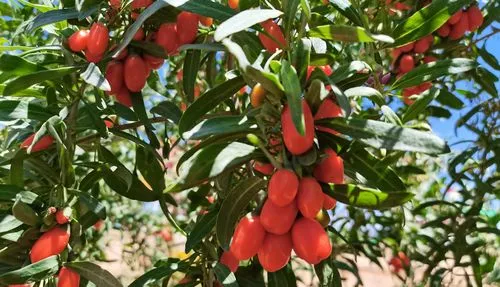
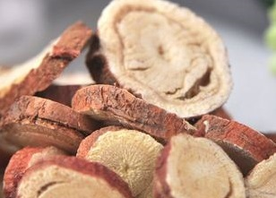
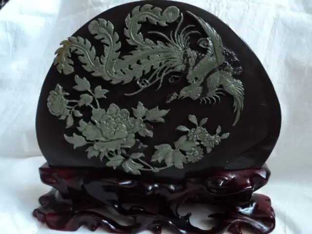
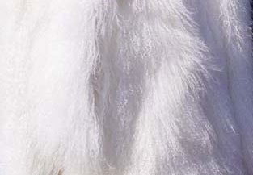
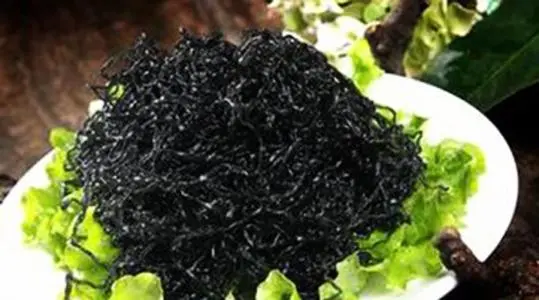

地方特产——宁夏五宝
宁夏最有名的地方特产，首推被誉为“红、黄、蓝、白、黑”宁夏“五宝”的枸杞、甘草、贺兰石、滩羊皮、发菜。
红宝：枸杞

枸杞是木本植物，浆里呈鲜红色，形似纺锤，更似红玛瑙坠，是宁夏的传统名牌出口商品，以皮薄、肉厚、籽少、品质优良驰名中外。历史上是皇室贡品。
枸杞是一种名贵中药，营养成份十分丰富，并有很高的药物价值，不仅含铁、磷、钙等物质，而且还含有大量糖、脂肪、蛋白质及氨基酸、多糖色素、维生素、甾醇、甙类等，有润肺清肝、滋肾、益气、生精、助阳、祛风、明目、强筋骨的功能。
现应市者多为经过脱水处理的干果，用法主要有三：入药、泡酒泡茶、做菜。它的系列产品有：干鲜枸杞、枸杞菜、枸杞酒、枸杞水晶糖、鲜枸杞罐头，枸杞蜂蜜等。
黄宝：甘草

甘草，豆科，多年生草本植物。宁夏甘草以骨重粉足、条干顺直、口面新鲜、加工精细著称。出口叫“西正甘草”或“西正草”。有解毒、祛痰、止痛、解痉、抗癌等功能，并有补脾益气、滋阴润肺、缓急解毒、调和百药的效果。
宁夏甘草在中药界声名尤为显赫，这是因为宁夏雨量稀少，光照充沛，温寒兼容，土质深厚，正与甘草主要生长在干旱、半干旱的荒漠草原、沙漠边缘和黄土丘陵地带的品性相适宜。
因此宁夏出产的甘草以色红皮细、骨重粉足、条干顺直、口面新鲜的特质而更合药理，驰名中药界，故又有“西镇甘草”、“西正草”之称，与产自内蒙古草原的“梁外甘草”，齐名媲美。
蓝宝：贺兰石

贺兰石产于海拔2600米左右的贺兰山悬崖上，石料结构均匀，质地细腻，刚柔相宜。用它刻制的贺兰砚，具有发墨、存墨、护毫、耐用等优点。
贺兰石天然形成深紫绿两色，相互辉映，色彩鲜明，紫底绿彩，形态繁多奇妙，好像平柔绒上镶嵌着各式各样的翡翠。除两彩、三彩、多彩外，还有“石眼”、“玉带”、“银线”、“云纹”等特殊结构，妙不可言。雕刻艺人因石制宜，精心用料，雕出千姿百态的贺兰砚。
历史上贺兰砚曾与端砚、歙砚齐名，素有“一端二歙三贺兰”之说。它不仅是“文房四宝”的实用品，而且是珍贵的工艺收藏品。除刻制砚台外，贺兰石还被用来刻制成印章、镇纸、笔架等，都是雅致的文房贵品。
白宝：滩羊皮

滩羊皮裘皮用绵羊品种，在世界裘皮中独树一帜。有二毛、沙毛之分，毛色有纯白、纯黑、浅褐、杂色几种，多为纯白色。黑色皮又叫紫羔皮，因其少而贵。
白色皮张毛色洁白，光泽如玉，皮板薄如厚纸，但质地坚韧，柔软丰匀。毛穗呈现出特有的波浪弯，好像一湖涟漪、轻盈柔软，美观大方，保温性极佳，实为各类裘皮中之佼佼者，很早以来就是传统的名牌出口商品。
滩羊毛纤维细长均匀，绒毛轻柔蓬松，富弹性。也是制作毛毯、披肩、围脖等装饰品的高级原料。宁夏产的提花毛毯，以其优良的品质和独特的风格驰名世界。
黑宝：发菜

发菜在植物分类学中，属兰藻门，念珠藻的一种。是一种自然生长的珍贵的食用菌藻，产于干旱半干旱的宁夏中南部地区，逢雨萌发，深秋早春时节采收。
发菜的营养十分丰富，而且极易被人体吸收。其蛋白质含量为鸡蛋的20倍，含糖类、脂肪、钙质也较多，更富磷、铁等矿物质。在医学上有助消化、解积腻、清胃肠、降血压等功能，手术后的病人吃发菜，还能促使伤口愈合。
发菜曾经是宁夏饭桌上一种常见的菜肴，由于国家明令禁止采集发菜，如今已是不常见了。
特色美食
宁夏美食以西北面食为主，清真特色居多。因为农业发达，蔬菜水果较甘肃地区丰富，而黄河等河流分布于区内各地。牛羊肉是主要的食用肉类，各个县城都有大型的市场内现杀活羊，所以各色羊肉菜肴不能不尝。
回族传统不近烟酒，所以较为传统的清真餐馆不供应酒类饮品。但西北人饮酒者居多，该地盛产的低度白酒、果酒口感纯正，不过千万节制。
烩羊杂碎
风味独特。其制作方法是：用羊的内脏、头蹄肉，经仔细冲洗后，入开水锅煮熟后捞出，切成丝。以原汤下入切好的杂碎丝，加葱、姜、蒜末、红辣油、味精、香菜，即成烩羊杂碎。那红色的便是辣椒油，绿色的是青葱香菜末，油色下面是乳白色的鲜汤，喝一口鲜汤吃一口杂碎，不膻不腻，味道香醇浓郁。
清蒸羊羔肉
宁夏羊羔肉细嫩鲜美，没有膻味。羊羔肉最好选用胸叉、上脊骨部位，剁成长方形条，用清凉水洗净，摆在碗内，放上生姜、大葱、大蒜；再放上几粒生花椒，上笼蒸30分钟左右；然后扣至汤盘内上桌，配以醋、蒜汁、盐等调料佐食。
香酥鸡
银川地方风味小吃，特点是香酥脆嫩。制法：先把煮熟的母鸡去骨不去皮，将鸡肉撕成长条形，拌以盐、香油、味精，另用3个蛋清，加淀粉、白面各半，搅匀；将泡沫糊的一半倒入抹有清油的平盘中，然后投入鸡肉条，用剩余的一半泡沫糊将鸡肉条包起。包好的鸡肉条放进7成热的油锅中炸至白黄色捞出，切2刀3条，再横切、码盘，蘸椒盐食用。
羊肉臊子面
羊肉臊子面是宁夏著名的传统面食。在首府银川的大街小巷，处处可以见到羊肉臊子面馆。据说是由唐朝初期的“长寿面”演化而来，成为老人寿辰、小孩生日及其他节日的待客佳品，含“福寿延年”之意。好臊子面的特色是“面好、汤香”，“巧妇”们十分注重面条制作和炝汤。汤香，是臊子面的主要特色，俗云“吃饭吃汤”，意即指此。
羊排小揪面
羊排小揪面是宁夏的特色美食，尤以宁夏吴忠的羊排小揪面最为正宗，面片配上宁夏的羊肉筋道有味，是非常受宁夏人民欢迎的美食。材料：羊肉、土豆、韭菜、西红柿、番茄酱、葱、姜、蒜、辣椒面（不是辣椒粉）、盐、老抽、醋、五香粉（花椒大料粉）、鸡精。羊排小揪面最好使用新鲜羊肉，和高筋粉以保证面的口感和味道，面片不宜过多容易粘结，配螺丝菜或其他咸菜搭配食用味道更佳。
羊肉搓面
羊肉搓面是宁夏盛行的一种风味面食。有一点象西安的拉条子。面和好擀成片，切成细条用手搓圆，如西安的拉条子粗细。这道小吃特点：面精肉鲜，风味独特。先将面粉揉成面团醒好，将羊肉切成大丁炒熟。然后将面搓成筷子般粗，下锅煮熟，再浇上用羊肉原汁、羊肉丁和新鲜蔬菜烩成的汤，放入辣椒红油即口可食用，面精肉鲜，风味独特。
炒糊饽
炒糊饽是一道西北地方著名小吃，流行于宁夏银川、吴忠等地。特点是制作方便，配菜丰富，香、辣，嚼起来很有口感。“糊饽”是一种用烙饼切成饼条的俗称，又称“糊饽子”。加以配料炒制而成的一道主食。面粉加碱和成较硬的面团，稍饧后揉匀，再擀成薄饼，放入饼锅中烙至半熟，取出后切成长条。